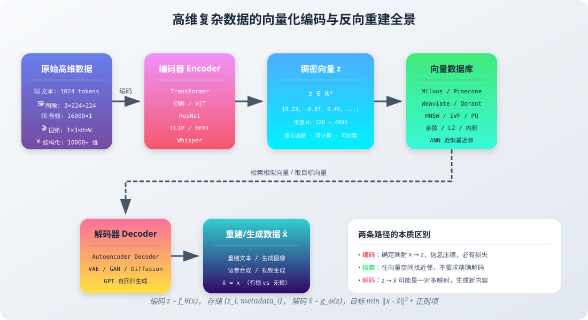
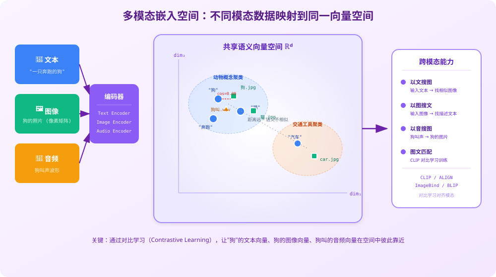
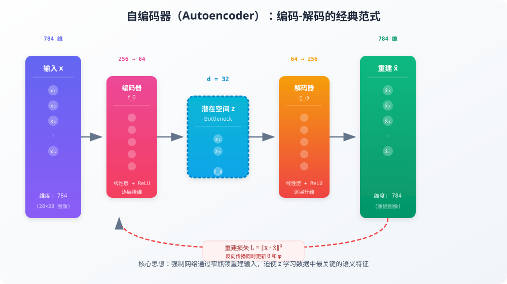
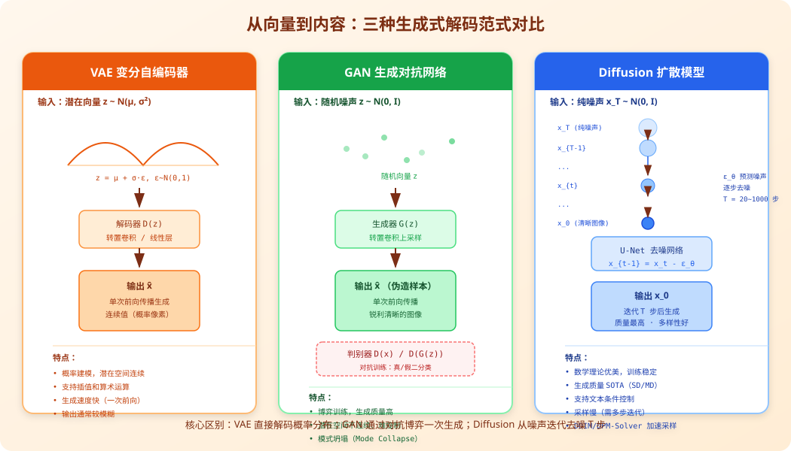
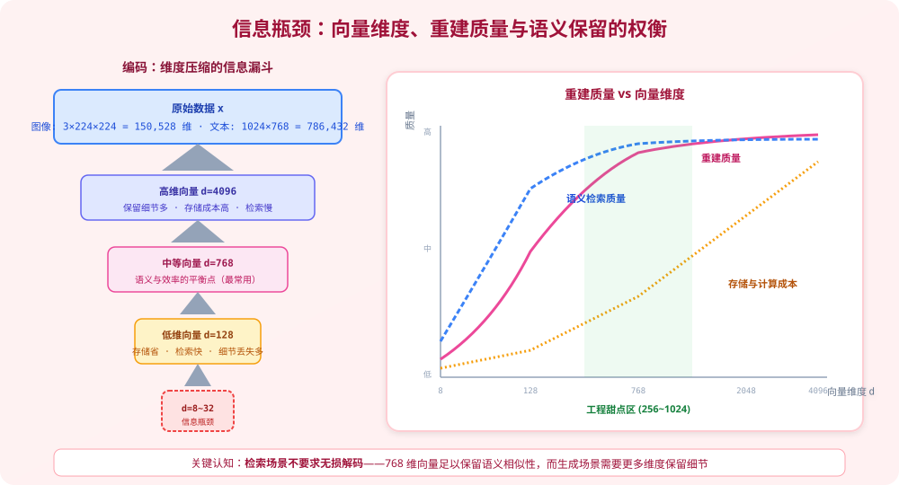

高维复杂数据的向量化与反向重建：从像素到向量，再从向量到内容
我们每天都在与人工智能系统交互：用文字搜索图片、让模型生成图像、通过语音指令控制设备、在海量文档中找到语义最相关的段落。这些能力的背后，都绕不开同一个核心问题：
计算机无法直接"理解"文字、图像、声音，
它只能计算数字。
那么——
一张 1920×1080 的照片，是如何变成一串浮点数存进数据库的？
存进去之后，又怎么根据这串数字找回相似的图片，甚至生成一张全新的图片？
这就是表示学习（Representation Learning） 要解决的根本问题：在高维原始数据和低维稠密向量之间建立可计算的映射。本文将从编码、存储、解码三个阶段，系统拆解这一过程的数学原理、工程实现和前沿方法。

1. 问题的本质：为什么需要向量化
1.1 什么是"高维复杂数据"
在机器学习语境中，"高维复杂数据"指的是原始维度极高、包含丰富结构信息、无法用简单规则直接解析的数据模态：
| 数据模态 | 原始表示 | 原始维度（典型值） | 结构特征 |
|---|---|---|---|
| 文本 | Token ID 序列 | 1024 tokens × 词表 50000 | 离散、序列依赖、一词多义 |
| 图像 | RGB 像素矩阵 | 3 × 224 × 224 = 150,528 | 空间局部相关性、平移不变性 |
| 音频 | 波形采样点 | 16000 Hz × 10 秒 = 160,000 | 时序依赖、频率结构、相位 |
| 视频 | 帧序列 | 30帧 × 3 × 1080 × 1920 ≈ 1.86 亿 | 时空双重相关性 |
| 图结构 | 节点 + 边 | 百万节点 × 特征维度 | 非欧几里得、关系依赖 |
| 多模态 | 以上组合 | 各模态维度之和 | 模态间语义鸿沟 |
这些原始数据有两个共同问题：
- 维度灾难（Curse of Dimensionality）：维度越高，数据在空间中越稀疏，距离计算失去意义，索引和检索成本指数级增长。
- 语义鸿沟（Semantic Gap）：原始像素值或字符 ID 不包含"这是一只猫"这样的高层语义；两张都是猫的图片，像素值可能差异巨大。
向量化的目标，就是学习一个映射函数，把这些高维、冗余、无语义的数据，压缩成低维、稠密、富含语义的向量表示：
f_θ: x ∈ ℝ^D → z ∈ ℝ^d
其中 D >> d，例如 D = 150,528，d = 768
这个向量 z 被称为嵌入（Embedding） 或潜在表示（Latent Representation）。
1.2 一个好的向量表示应该满足什么
不是随便把数据压成低维向量就行。高质量的嵌入需要满足以下性质：
| 性质 | 含义 | 反例 |
|---|---|---|
| 语义相似性 | 语义相近的样本在向量空间中距离近 | 猫和狗的向量距离应该小于猫和汽车 |
| 解耦表示 | 不同语义因素对应不同方向/子空间 | "颜色"和"形状"不应纠缠在同一维度 |
| 平滑性 | 向量空间中的小变化对应数据的小变化 | 向量加一点噪声不应让"猫"变成"汽车" |
| 线性可分 | 简单分类器就能在该空间完成任务 | 复杂决策边界说明表示质量差 |
| 泛化性 | 未见过的样本也能映射到合理位置 | 只记住训练样本，新样本全是噪声 |
| 紧凑性 | 维度尽可能低，信息尽可能多 | 768 维能解决的问题不需要 4096 维 |
2. 编码阶段：从原始数据到稠密向量
2.1 文本编码：从 Token ID 到语义向量
文本向量化是最成熟的领域，经历了从独热编码到上下文嵌入的演进。关于词向量的完整流水线（分词、词表、Word2Vec、BERT 等），已有专门文章详述，这里聚焦于"最后一步：如何把整个输入变成一个用于存储和检索的向量"。
2.1.1 Token 级嵌入
模型内部，每个 Token 先经过嵌入层查表得到基础向量：
import torch
import torch.nn as nn
# 词表大小 V=50000，嵌入维度 d=768
token_embedding = nn.Embedding(num_embeddings=50000, embedding_dim=768)
# 输入 Token ID 序列
token_ids = torch.tensor([15, 86, 120, 205, 309]) # "我喜欢自然语言处理"
# 查表得到每个 Token 的向量：shape = (5, 768)
token_vectors = token_embedding(token_ids)
加上位置编码后，向量序列进入 Transformer 层。经过多层自注意力，每个位置的输出向量已经融合了上下文信息。
2.1.2 句/段级嵌入：从序列到单向量
对于检索、聚类等任务，我们需要把整个句子或段落压缩成一个向量。常见的聚合策略有：
| 聚合方法 | 做法 | 适用场景 | 缺点 |
|---|---|---|---|
| CLS 池化 | 取 BERT 第一个 <[BOS_never_used_51bce0c785ca2f68081bfa7d91973934]> Token 的输出 |
BERT 系列分类/匹配任务 | 预训练目标与检索不完全对齐 |
| 均值池化 | 对所有 Token 向量取平均 | 通用句向量 | 忽略词的重要性差异 |
| 最大池化 | 每个维度取所有 Token 的最大值 | 突出显著特征 | 可能丢失全局信息 |
| 注意力加权 | 学习每个 Token 的权重再加权 | 质量较高 | 增加计算量和过拟合风险 |
| 专用 Sentence 模型 | 用对比学习端到端训练句向量 | 语义检索、RAG | 需要专门训练 |
现代检索系统通常使用专门的 Sentence Embedding 模型（如 bge-large-zh、m3e、text-embedding-3-large），它们通过对比学习训练：语义相近的句子向量拉近，不相关的推远。
# 使用 FlagEmbedding 生成中文句向量（伪代码示例）
from FlagEmbedding import FlagModel
model = FlagModel('BAAI/bge-large-zh-v1.5')
query_vector = model.encode("什么是向量数据库？")
document_vector = model.encode("向量数据库专门用于存储和检索高维嵌入...")
# 余弦相似度
similarity = cosine_similarity(query_vector, document_vector)
# query_vector.shape = (1024,)
2.2 图像编码：从像素矩阵到视觉特征
2.2.1 CNN 编码器
经典的图像编码器使用卷积神经网络（CNN），典型代表是 ResNet：
输入图像 (3, 224, 224)
↓ Conv1 + BN + ReLU + MaxPool
↓ Layer1 (残差块 × 3) → (256, 56, 56)
↓ Layer2 (残差块 × 4) → (512, 28, 28)
↓ Layer3 (残差块 × 6) → (1024, 14, 14)
↓ Layer4 (残差块 × 3) → (2048, 7, 7)
↓ Global Average Pooling
↓
图像特征向量 (2048,)
全局平均池化（GAP）把 7×7 的空间维度压缩为 1，得到一个 2048 维的向量，代表整张图像的语义内容。
2.2.2 Vision Transformer (ViT)
ViT 把图像切成 16×16 的小块（Patch），每个 Patch 线性投影后像 Token 一样输入 Transformer：
图像 (3, 224, 224)
↓ 切分为 14×14 = 196 个 Patch
↓ 每个 Patch 展平并线性投影：(196, 768)
↓ 加上位置编码 + <[BOS_never_used_51bce0c785ca2f68081bfa7d91973934]> Token
↓ 12 层 Transformer Encoder
↓ 取 <[BOS_never_used_51bce0c785ca2f68081bfa7d91973934]> 输出
↓
图像向量 (768,)
2.2.3 多粒度表示
实际系统中，图像不一定只压缩为一个向量：
全局向量 (1, d) —— 用于图搜图、图像分类
Patch 向量 (N, d) —— 用于目标检测、图像分割、跨模态对齐
区域向量 (M, d) —— 用于图文匹配（关注图中具体物体）
2.3 音频编码：从波形到时序语义向量
音频的原始形式是一维波形，采样率通常为 16kHz 或更高。直接对原始波形编码效率低，常见做法是先转换为梅尔频谱图（Mel Spectrogram），将波形变成二维时频表示，再用 CNN 或 Transformer 编码。
Whisper 模型的编码流程：
原始波形 (16000 × T 秒)
↓ 短时傅里叶变换 (STFT)
↓ 梅尔滤波器组
↓ 对数压缩
梅尔频谱 (80, T')
↓ 2 层卷积下采样
↓ 位置编码
↓ N 层 Transformer Encoder
音频特征序列 (T'', d_model)
↓ 可选：均值池化得到整段音频向量
音频向量 (d_model,)
2.4 多模态编码：对齐到同一个语义空间
更有趣的场景是跨模态检索：用文字搜图片、用图片搜音频、用视频搜文档。这需要文本、图像、音频等不同模态的编码器把各自的数据映射到同一个向量空间。

CLIP（Contrastive Language-Image Pre-training）是这一范式的开创者。它的训练方式非常直接：
一个批次中包含 N 个 (图像, 文本) 配对：
1. 图像编码器输出 N 个图像向量：I_1, I_2, ..., I_N
2. 文本编码器输出 N 个文本向量：T_1, T_2, ..., T_N
3. 计算 N×N 相似度矩阵
4. 对角线是正确配对（正样本），其他都是错误配对（负样本）
5. 对比损失：让对角线相似度高，非对角线相似度低
用公式表示，给定图像 I_i 和文本 T_j，相似度为：
sim(I_i, T_j) = I_i · T_j / τ （τ 是温度系数）
损失函数为对称交叉熵：
L = (1/2N) Σ_i [ -log exp(sim(I_i,T_i)/τ) / Σ_j exp(sim(I_i,T_j)/τ) ]
+ (1/2N) Σ_j [ -log exp(sim(I_j,T_j)/τ) / Σ_i exp(sim(I_i,T_j)/τ) ]
训练完成后，"一只奔跑的狗"这句话的向量、狗奔跑的照片向量、狗叫声的音频向量，会在共享空间中彼此靠近。这使得零样本（Zero-shot）跨模态检索成为可能。
2.5 自编码器：编码-解码的经典范式
如果目标是"既能把高维数据压成向量，又能从向量重建出原始数据"，最基础的架构是自编码器（Autoencoder, AE）。

自编码器由两部分组成：
- 编码器
f_θ：把高维输入x压缩为低维潜在向量z - 解码器
g_φ：从z重建出x̂
import torch
import torch.nn as nn
class Autoencoder(nn.Module):
def __init__(self, input_dim=784, latent_dim=32):
super().__init__()
# 编码器：784 → 256 → 64 → 32
self.encoder = nn.Sequential(
nn.Linear(input_dim, 256),
nn.ReLU(),
nn.Linear(256, 64),
nn.ReLU(),
nn.Linear(64, latent_dim),
)
# 解码器：32 → 64 → 256 → 784
self.decoder = nn.Sequential(
nn.Linear(latent_dim, 64),
nn.ReLU(),
nn.Linear(64, 256),
nn.ReLU(),
nn.Linear(256, input_dim),
nn.Sigmoid(), # 输出像素值 [0,1]
)
def forward(self, x):
z = self.encoder(x)
x_hat = self.decoder(z)
return x_hat, z
model = Autoencoder(input_dim=784, latent_dim=32)
训练目标是最小化重建误差：
L(θ, φ) = (1/N) Σ ‖x_i - g_φ(f_θ(x_i))‖²
= (1/N) Σ ‖x_i - x̂_i‖²
这里的关键是潜在维度 d 远小于输入维度 D。如果 d = D 甚至更大，网络可以简单地学会恒等映射，z 不包含任何有效压缩。瓶颈结构迫使网络学习数据中最本质的特征。
自编码器的变体包括：
| 变体 | 核心思想 | 特点 |
|---|---|---|
| 稀疏自编码器 | 在损失中加稀疏惩罚，让 z 大部分维度为 0 | 可解释性更强 |
| 去噪自编码器（DAE） | 输入加噪声，目标是重建干净原图 | 鲁棒性更好 |
| 变分自编码器（VAE） | 对潜在空间施加概率分布约束 | 支持生成新样本 |
| 卷积自编码器 | 用卷积/转置卷积替代全连接 | 适合图像数据 |
3. 存储阶段：向量数据库与近似最近邻
编码得到的向量需要持久化存储，并支持高效的相似度检索。当向量规模达到百万、千万甚至上亿时，暴力计算每个查询与所有向量的距离在时间上不可接受。
3.1 向量的存储格式
一个向量条目通常包含三部分：
{
"id": "doc_20240315_0001",
"vector": [0.23, -0.87, 0.45, 0.12, ...], // float32 × d
"metadata": {
"text": "向量数据库使用 HNSW 索引...",
"source": "knowledge_base.pdf",
"page": 42,
"timestamp": "2024-03-15T10:30:00Z"
}
}
存储成本估算（以 float32、768 维为例）：
单个向量：768 × 4 字节 = 3,072 字节 ≈ 3 KB
100 万向量：3 KB × 1,000,000 ≈ 3 GB
1 亿向量：≈ 300 GB（纯向量，不含元数据和索引开销）
实际工程中会使用：
- float16 / bfloat16：精度减半，存储减半，对检索效果影响通常很小
- int8 量化：进一步压缩到 1/4
- PQ（乘积量化）：把向量切分子空间分别压缩，可达 10~100 倍压缩率
3.2 近似最近邻搜索（ANN）
精确最近邻搜索需要计算查询向量与数据库中每个向量的距离，时间复杂度 O(Nd)。ANN 通过建立索引结构，牺牲少量召回率换取数量级的速度提升。

3.2.1 HNSW：分层导航小世界图
HNSW（Hierarchical Navigable Small World）是目前最流行的 ANN 索引算法，被 Milvus、Qdrant、Weaviate 等广泛采用。
它的核心思想来自社交网络中的"六度分隔"理论：构建多层图结构，顶层稀疏、连接长距离节点；底层稠密、包含所有节点。
查询流程（从顶层到底层贪心搜索）：
1. 从顶层的入口节点开始
2. 在当前层寻找距离查询向量最近的节点
3. 走到该节点，继续在其邻居中找更近的
4. 直到当前层找不到更近的节点，下降到下一层
5. 在底层（包含全部数据）做精细搜索
6. 返回 top-K 最近邻
复杂度约为 O(log N)，召回率通常可达 95% 以上。参数 M（每个节点的最大连接数）和 ef_construction（建图时搜索宽度）控制图的质量。
3.2.2 IVF：倒排文件索引
IVF（Inverted File Index）使用 K-Means 把向量空间划分为 nlist 个簇：
建库阶段：
1. 对所有向量做 K-Means 聚类，得到 nlist 个中心点
2. 每个向量分配到最近的中心点（倒排列表）
查询阶段：
1. 计算查询向量与 nlist 个中心点的距离
2. 选择最近的 nprobe 个簇
3. 只在这 nprobe 个簇内计算精确距离
4. 返回 top-K
通过调节 nprobe，可以在速度和精度之间灵活权衡：nprobe=1 最快但召回低，nprobe=nlist 等于暴力搜索。
3.2.3 PQ：乘积量化
PQ（Product Quantization）通过压缩向量来大幅减少内存和计算量：
假设 d = 768，切分为 m = 8 个子空间，每个子空间 96 维：
1. 对每个子空间独立做 K-Means，得到 256 个聚类中心
2. 每个子向量用 1 字节（0~255）表示最近中心的编号
3. 原始 768×4 = 3072 字节 → 压缩为 8 字节！
查询时使用非对称距离计算（ADC）：
预计算查询子向量与每个子空间中心的距离，
然后通过查表累加得到近似距离，无需解压。
实际系统中常组合使用，如 IVF-PQ：先用 IVF 缩小搜索范围，再用 PQ 压缩内存。
3.3 距离度量
向量之间的"相似度"有多种计算方式，选择取决于模型训练时使用的度量：
| 度量 | 公式 | 适用场景 |
|---|---|---|
| 余弦相似度 | cos(u,v) = (u·v) / (‖u‖·‖v‖) |
文本嵌入、方向比大小重要 |
| 欧氏距离 L2 | ‖u - v‖₂ = √Σ(uᵢ-vᵢ)² |
图像特征、需要绝对距离 |
| 内积 IP | u·v = Σuᵢvᵢ |
已归一化的向量、推荐系统 |
| 曼哈顿距离 L1 | Σ|uᵢ - vᵢ| |
对异常值更鲁棒 |
| 杰卡德距离 | 1 - |A∩B|/|A∪B| |
集合、二值向量 |
重要提醒：向量必须由同一个模型（或同一训练目标下的兼容模型）生成，才能比较相似度。不同模型学习到的坐标系不同，即使维度相同，直接计算距离也没有意义。
4. 解码阶段：从向量重建/生成数据
编码把数据变成向量，但"反向变回来"并不是一个简单的逆运算。根据目标不同，有三类本质不同的"解码"：
- 精确重建：自编码器试图还原输入，
x̂ ≈ x - 条件生成：给定向量 + 条件，生成新的符合条件的内容
- 检索映射：向量本身不直接解码，而是通过检索找到对应的原始数据
4.1 自编码器解码：确定性重建
基础自编码器的解码是一个确定的前向传播过程：
def decode(self, z):
return self.decoder(z)
# 编码
z = model.encoder(x) # shape: (batch, 32)
# 解码（重建）
x_reconstructed = model.decoder(z) # shape: (batch, 784)
对于 MNIST 手写数字，32 维潜在向量足以重建出可辨认的数字。但对于复杂自然图像，基础自编码器的重建结果往往模糊，原因是：
- 逐像素 MSE 损失倾向于输出所有可能结果的平均值
- 一对一映射无法表达"一个模糊的轮廓可能是多种不同图像"的不确定性
4.2 VAE：概率式解码与潜在空间插值
VAE（Variational Autoencoder）对自编码器做了关键改进：编码器不输出确定的 z，而是输出概率分布的参数 μ 和 log σ²。

class VAE(nn.Module):
def __init__(self, input_dim=784, latent_dim=32):
super().__init__()
self.encoder_shared = nn.Sequential(
nn.Linear(input_dim, 256),
nn.ReLU(),
)
self.fc_mu = nn.Linear(256, latent_dim)
self.fc_logvar = nn.Linear(256, latent_dim)
self.decoder = nn.Sequential(
nn.Linear(latent_dim, 256),
nn.ReLU(),
nn.Linear(256, input_dim),
nn.Sigmoid(),
)
def reparameterize(self, mu, logvar):
# 重参数化技巧：z = μ + σ·ε，ε~N(0,I)
std = torch.exp(0.5 * logvar)
eps = torch.randn_like(std)
return mu + eps * std
def forward(self, x):
h = self.encoder_shared(x)
mu = self.fc_mu(h)
logvar = self.fc_logvar(h)
z = self.reparameterize(mu, logvar)
x_hat = self.decoder(z)
return x_hat, mu, logvar
VAE 的损失函数由两部分组成：
L = L_reconstruction + β · L_KL
L_reconstruction = -E[log p(x|z)] （重建损失，通常用 BCE/MSE）
L_KL = -½ Σ(1 + log σ² - μ² - σ²) （KL 散度，让潜在分布接近 N(0,I)）
因为潜在空间被约束为近似标准正态分布，VAE 支持：
- 随机采样生成：从
N(0,I)采样z，直接通过解码器生成新图像 - 线性插值：
z_interp = α·z₁ + (1-α)·z₂，对应两张图像的平滑过渡 - 属性算术：
z_smiling_woman - z_woman + z_man ≈ z_smiling_man
4.3 GAN：对抗式生成
GAN（Generative Adversarial Network）用一个生成器和一个判别器的博弈来训练生成能力：
生成器 G：接收随机噪声 z，输出假图像 G(z)
判别器 D：接收图像，判断是真实图像还是生成器伪造的
训练目标（极小极大博弈）：
min_G max_D E[log D(x_real)] + E[log(1 - D(G(z)))]
与自编码器不同，GAN 没有编码器把真实图像映射到 z（后来的 BiGAN/ALI 才补上）。它的"解码"是纯生成式的：
# 生成：随机噪声 → 图像
z = torch.randn(batch_size, latent_dim) # 从标准正态采样
fake_images = generator(z) # 一次前向生成
GAN 生成的图像通常更锐利清晰，但训练不稳定，且潜在空间不如 VAE 连续可控。
4.4 Diffusion 模型：从噪声中迭代"解码"
扩散模型（Diffusion Model）是当前图像生成的 SOTA 方法（Stable Diffusion、DALL·E 3、Midjourney 均基于此）。它的"解码"过程最为特殊：
前向加噪过程（训练时）：
x_0 → x_1 → x_2 → ... → x_T
每一步加一点高斯噪声，最终 x_T 接近纯噪声
反向去噪过程（生成/解码时）：
x_T → x_{T-1} → ... → x_1 → x_0
训练一个 U-Net 预测每一步的噪声，逐步去噪得到清晰图像
生成（解码）一个新样本的流程：
@torch.no_grad()
def generate(model, shape, num_steps=50):
# 1. 从纯噪声开始
x = torch.randn(shape)
# 2. 逐步去噪
for t in reversed(range(num_steps)):
# 预测当前时刻的噪声
noise_pred = model(x, t)
# 根据调度器计算 x_{t-1}
x = scheduler.step(noise_pred, t, x).prev_sample
# 3. 返回生成的清晰图像
return x
条件生成（如文本生成图像）则是在去噪过程中注入文本向量作为条件：
文本 "一只戴着帽子的猫"
↓ Text Encoder (CLIP/T5)
文本条件向量 c
↓ 交叉注意力注入 U-Net
去噪轨迹被引导朝向"戴帽子的猫"
↓
生成图像
扩散模型的"潜在向量"可以是：
- 纯噪声 x_T（随机起点）
- 文本/图像条件向量 c（控制生成方向）
- Stable Diffusion 还在压缩的潜在空间中做扩散（而非像素空间），效率大幅提升
4.5 大语言模型中的"解码"：从 Hidden State 到 Token
在 LLM 中，还有一种特殊的"反向变回"：把 Transformer 最后一层的隐藏状态映射回自然语言 Token。
输入 Token IDs
↓ Embedding 层
输入向量序列
↓ N 层 Transformer
最后一层隐藏状态 h: (seq_len, d_model)
↓ 输出投影（线性层 + Softmax）
词表上的概率分布 P(w|context): (seq_len, vocab_size)
↓ 采样/贪心/Beam Search
输出 Token IDs
↓ Detokenizer
自然语言文本
# LLM 解码的核心计算（简化版）
hidden_states = transformer(input_ids) # (seq_len, 4096)
logits = lm_head(hidden_states) # (seq_len, 50000) 投影到词表
probs = softmax(logits / temperature, dim=-1)
next_token = torch.multinomial(probs, num_samples=1)
这里的 lm_head 权重通常与输入 Embedding 层权重共享（Weight Tying），形成一个有趣的对称：
编码：Token ID → Embedding 表查表 → 向量
解码：向量 → 与 Embedding 表每个行向量点积 → 最相似的 Token ID
4.6 检索 vs 生成：两种"从向量到数据"的范式
很多人混淆这两种范式，实际上它们的目标完全不同：
| 维度 | 检索范式（Retrieval） | 生成范式（Generation） |
|---|---|---|
| 目标 | 找到数据库中已存在的真实数据 | 创造训练集中不存在的新内容 |
| 向量作用 | 作为索引键，通过相似度定位原始数据 | 作为生成起点或条件 |
| 输出 | 原文、原图、原音频（100% 真实） | 新文本、新图像、新音频（可能包含错误） |
| 典型系统 | RAG、以图搜图、推荐召回 | DALL·E、GPT、Sora |
| 信息保真 | 无损（返回的就是原始数据） | 有损（重建/生成，可能有幻觉） |
| 向量到数据 | z → search → (z, x, metadata) |
z → decoder/generator → x̂ |
在 RAG 系统中，向量本身不需要被解码回文本——它只用于计算相似度，匹配到的原文存在元数据里，直接取出返回即可。
用户问题 → 编码为查询向量 q
q 在向量数据库中 ANN 搜索 → 返回 top-K 个最相似的 (id, text, score)
把 text 拼入 Prompt → LLM 生成答案
5. 信息论视角：有损压缩的本质
5.1 为什么编码必然有损
从信息论角度，把 D 维数据压缩到 d 维（D >> d），根据数据处理不等式和率失真理论，不可能保证完全无损。

原始数据 x 包含的信息：I(x) ≈ D × 每维信息量
向量 z 的信息容量：≤ d × 每维精度
若 d < D 且精度有限，z 无法承载 x 的全部信息
→ 重建时必然有损失
但"有损"不一定是坏事：
- 去除噪声和冗余，保留语义相关的信息
- 降维后计算和存储成本大幅下降
- 对于检索任务，我们只需要"语义相似性"，不需要像素级一致
5.2 不同任务对损失的容忍度
| 任务 | 可接受损失 | 典型维度 | 评估指标 |
|---|---|---|---|
| 语义检索 | 高（只关心语义） | 128 ~ 1024 | Recall@K、MRR、NDCG |
| 图像分类 | 中（需要类别特征） | 512 ~ 2048 | Top-1 Accuracy |
| 图像压缩 | 低（视觉可接受即可） | 8 ~ 64 | PSNR、SSIM、LPIPS |
| 高质量生成 | 极低（细节要丰富） | 1024 ~ 8192 | FID、IS、人类评分 |
| 异常检测 | 中等（需要正常模式） | 32 ~ 256 | AUROC、AUPRC |
5.3 维度选择的工程经验
不是维度越高越好。实践中存在"甜点区"：
d < 64: 语义信息严重不足，检索质量差
d = 256: 小规模应用、移动端部署的合理选择
d = 768: BERT-base 级别，通用任务性价比最高
d = 1024: 大多数生产级 RAG 系统的主流选择
d = 1536: OpenAI text-embedding-ada-002
d = 3072: OpenAI text-embedding-3-large
d > 4096: 边际收益递减，存储成本翻倍
经验法则： - 先用标准维度（768 或 1024）跑通 baseline - 如果质量不达标，再尝试更高维度或更好的模型 - 向量维度应与数据复杂度匹配：短文本不需要 4096 维
6. 端到端架构示例
6.1 多模态搜索引擎
入库阶段：
图像 / 文档 / 音频
↓ 对应编码器
统一维度向量 (768,)
↓ 归一化 + 元数据封装
Milvus / Qdrant（HNSW 索引）
查询阶段：
用户输入（文本或上传图像）
↓ 同一编码器
查询向量 q
↓ ANN 搜索 top-10
返回候选结果 + 相似度分数
↓ 重排序（可选 Cross-Encoder）
最终结果
6.2 RAG 检索增强生成
知识库文档
↓ 分块（Chunking，通常 256~512 字）
↓ Embedding 模型
↓
向量数据库
用户提问
↓ Embedding 模型
查询向量
↓ 向量检索
相关文档片段
↓ 拼入 Prompt
LLM 生成带引用的答案
6.3 文生图系统
文本 Prompt："赛博朋克风格的猫，霓虹灯背景"
↓ Text Encoder (CLIP/T5)
文本条件向量 c
↓
随机噪声 x_T
↓ U-Net 迭代去噪（条件注入 via Cross-Attention）
潜在图像 x_0
↓ VAE Decoder
最终图像
7. 常见误区
误区一：向量就是数据的"无损压缩"
绝大多数机器学习嵌入是有损语义压缩，不是 ZIP 那样的无损压缩。你不能指望从 768 维向量精确重建出原始图像的每个像素。检索场景不需要重建，生成场景生成的是"新内容"而非"原内容"。
误区二：向量的每个维度都有明确含义
与人工设计的特征（"年龄""收入""点击次数"）不同，神经网络学到的维度通常不可解释。语义是分布式地编码在多个维度的组合模式中的。可视化某一维的含义往往得不到有意义的结论。
误区三：相似度 0.95 就代表"正确"
向量相似度衡量的是"模型认为它们有多相似"，不等于"事实正确"或"语义等价"。相似的句子可能有事实错误，不相似的表述也可能表达相同含义。阈值需要根据具体业务和评测来定。
误区四：向量数据库和生成模型是一回事
向量数据库负责存储和检索已有向量，生成模型负责创造新内容。RAG 系统中两者配合使用，但它们解决的是不同问题。
误区五：向量可以跨模型比较
不同模型、不同训练目标、甚至同一模型的不同版本，学习到的向量空间都不同。bge-base 生成的向量和 text-embedding-3 生成的向量不能直接计算余弦相似度。
误区六：维度越高效果越好
超过一定阈值后，增加维度带来的收益递减，但存储和计算成本线性增长。应该根据任务评测选择最合适的维度，而不是盲目追求大模型高维度。
8. 中英文术语对照表
| 中文 | 英文 | 缩写 | 简要说明 |
|---|---|---|---|
| 嵌入 / 词向量 | Embedding | - | 数据的稠密向量表示 |
| 编码器 | Encoder | - | 将原始数据映射为向量的网络 |
| 解码器 | Decoder | - | 从向量重建/生成数据的网络 |
| 自编码器 | Autoencoder | AE | 编码-解码对称结构 |
| 变分自编码器 | Variational Autoencoder | VAE | 概率化的自编码器 |
| 生成对抗网络 | Generative Adversarial Network | GAN | 生成器判别器博弈 |
| 扩散模型 | Diffusion Model | - | 迭代去噪生成 |
| 潜在空间 | Latent Space | - | 向量所在的低维空间 |
| 向量数据库 | Vector Database | - | 专门存储检索向量的数据库 |
| 近似最近邻 | Approximate Nearest Neighbor | ANN | 牺牲精度换速度的搜索 |
| 分层导航小世界 | Hierarchical Navigable Small World | HNSW | 一种图索引算法 |
| 倒排文件 | Inverted File | IVF | 基于聚类的索引 |
| 乘积量化 | Product Quantization | PQ | 向量压缩方法 |
| 对比学习 | Contrastive Learning | - | 通过正负样本学习表示 |
| 余弦相似度 | Cosine Similarity | - | 向量夹角余弦 |
| 欧氏距离 | Euclidean Distance | L2 | 向量间直线距离 |
| 检索增强生成 | Retrieval-Augmented Generation | RAG | 检索+生成组合架构 |
| 维度灾难 | Curse of Dimensionality | - | 高维空间数据稀疏问题 |
| 语义鸿沟 | Semantic Gap | - | 低级特征与高级语义的差距 |
| 信息瓶颈 | Information Bottleneck | IB | 压缩与保留信息的权衡 |
9. 总结
高维复杂数据向量化与反向重建的完整图景可以概括为三句话：
编码阶段，通过神经网络学习非线性映射 f_θ: x → z，把文本、图像、音频等原始数据压缩为富含语义的低维稠密向量。编码器可以是 Transformer、CNN、ViT，也可以通过对比学习实现多模态对齐。
存储阶段，向量连同元数据存入向量数据库，通过 HNSW、IVF-PQ 等 ANN 索引实现毫秒级百亿规模检索。向量本身是"索引键"而非"数据本身"，原始数据保存在元数据中。
解码阶段存在三种本质不同的路径：
1. 自编码器重建：z → x̂，确定性映射，目标是还原输入
2. 生成模型创造：VAE/GAN/Diffusion 从向量（或噪声+条件）生成全新内容，输出不保证与原始数据一致
3. 检索映射：向量不直接解码，而是通过 ANN 找到对应的原始数据直接返回——这是 RAG 和搜索引擎采用的方式
理解这套机制的关键是认识到：向量化不是无损压缩，而是语义蒸馏。768 个浮点数无法保存一张 1080p 图片的全部像素，但它足以捕捉"这是一只在阳光下奔跑的金毛犬"这一语义——而这正是智能系统进行相似度计算、语义检索和内容生成所真正需要的。
从 Word2Vec 到 CLIP，从自编码器到 Stable Diffusion，从暴力搜索到 HNSW，这条技术链条仍在快速演进。但核心思想始终未变：让离散、高维、非结构化的现实世界数据，映射到连续、低维、可计算的向量空间，再在这个空间中完成匹配、检索与生成。